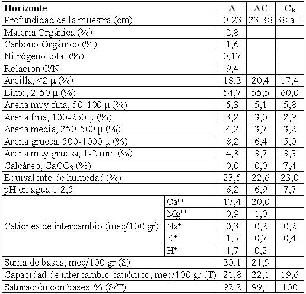

Haplustol éntico, franca fina, mixta, térmica
Capacidad de uso: IIIc
Este suelo, de reducida representatividad geográfica, se encuentra vinculado a los ambientes fluviales de terrazas y derrames del río Pinto y otros, en situación de relieve plano a suavemente ondulado, asociado a otros suelos que ocupan las partes altas. Es bien drenado, débil a moderadamente desarrollado (perfil de tipo A-AC-C) sobre sedimentos de textura franco limosa y de moderada a buena capacidad de retención de humedad. Presenta un horizonte A de 23 cm de espesor, rico en materia orgánica de textura franco limosa con 18% de arcilla y estructura en bloques. Sigue a continuación un horizonte de transición AC algo mas claro con textura franco limosa (20% de arcilla) y estructura en bloques débiles. El material originario comienza a 38 cm con carbonato de calcio libre en la masa del suelo.
Descripción del perfil típico:
El perfil representativo de este suelo fue descrito a 4 km al Sur de la localidad de Sarmiento, departamento Totoral, provincia de Córdoba.
A 0-23 cm; color en húmedo pardo muy oscuro (10YR2/2); franco limoso; estructura en bloques subangulares medios moderados; friable en húmedo; ligeramente plástico; ligeramente adhesivo; pH 6,2; raíces comunes a abundantes; límite inferior claro, suave.
AC 23-38 cm; color en húmedo pardo oscuro (10YR3/3); franco limoso; masivo a estructura en bloques débiles; friable en húmedo; ligeramente plástico; ligeramente adhesivo; pH 6,9; raíces escasas; límite inferior abrupto, ondulado.
Ck 38 cm a +; color en húmedo pardo oscuro a pardo (7,5YR4/4); franco limoso; masivo; friable en húmedo; ligeramente plástico; ligeramente adhesivo; violenta reacción al ClH en la masa del suelo; pH 7,7.
Cuadro Nº32
Datos analíticos Serie TERRAZAS DEL RÍO PINTO
Situación: Latitud: 30º47’S Longitud: 64º13’O Altitud: 600 m.s.n.m.
 |